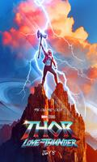
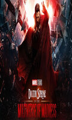
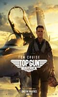

Just Reviewed
- 
Thor: Love and thunder
A parody of Thor
Though the movie had so much potential but sadly it became a mediocre parody .just disappointing. Only positive thing is gorr's presence.otherwise whole movie didn't stood up to the expectations.it's even below then Ragnarok.probably 2nd worst thor movie after The dark world. One of the biggest disappointing thing is the pace & Runtime movie needed 2hrs 30 mins time for establishing the characters with the story. Everything Just feels rushed. Another big negetive aspect is thor is known for mind blowing & goosebumpsy fight scenes but this movie didn't have any single moments like that. It should've been little dark & serious story telling rather than a cheap parody. - 
Dr. Strange: The multiverse in the multiverse of madness
Not enough multiverse and maybe too much madness
Sam Raimi definitely put a splash of horror in this action film. Doctor Strange in the Multiverse of Madness is darker & more violent than any previous MCU movie, which could be considered a strength. However, I felt like there was not enough multiverse and maybe too much madness. Despite the entertaining visuals, the plot is fairly chaotic, and the acting & dialogue are inconsistent. This movie is an entertaining ride, but it's a little too messy to stand on its own. - 
Top-Gun: Maverick
Flying High
Top Gun (1986) made Tom Cruise a star, and now 36 years later he jumps back in role of Pete Mitchell AKA Maverick almost like he never left. Maverick never seems let his age slow him down, and still is cocky has ever, and is ordered to train a bunch of young pilots for a deadly mission, but sees a little bit of himself in them, and must get them working together has a team. Tom Cruise is great has Maverick, who is coming to terms with the past. Miles Teller and Glen Powell are also great, and not to mention Jennifer Connelly. But the flying scenes are what makes this movie, you feel like your flying with them. Feels has real has ever. A terrific sequel 36 years worth the wait. Everything everywhere here all at once
Best film of 2022
Profoundly deep, genuinely moving, utterly hilarious, highly imaginative and a visual feast. Haven't laughed this hard, cried this much or thought so deeply about any film in 2022 Much less all in the same viewing. This was indeed everything, everywhere all at once.